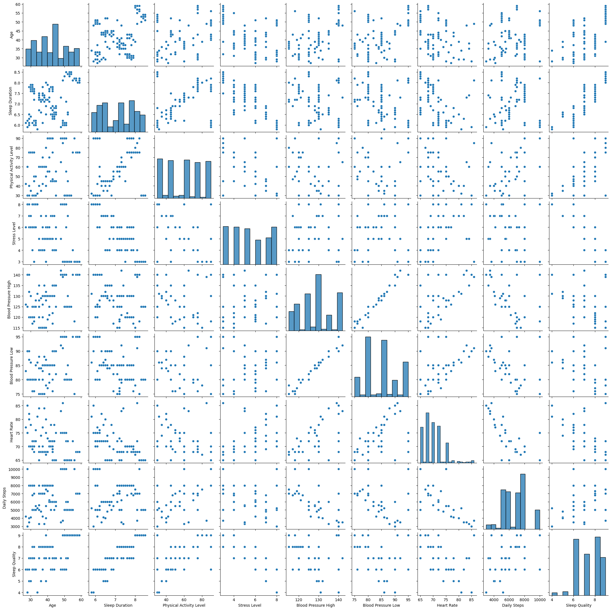
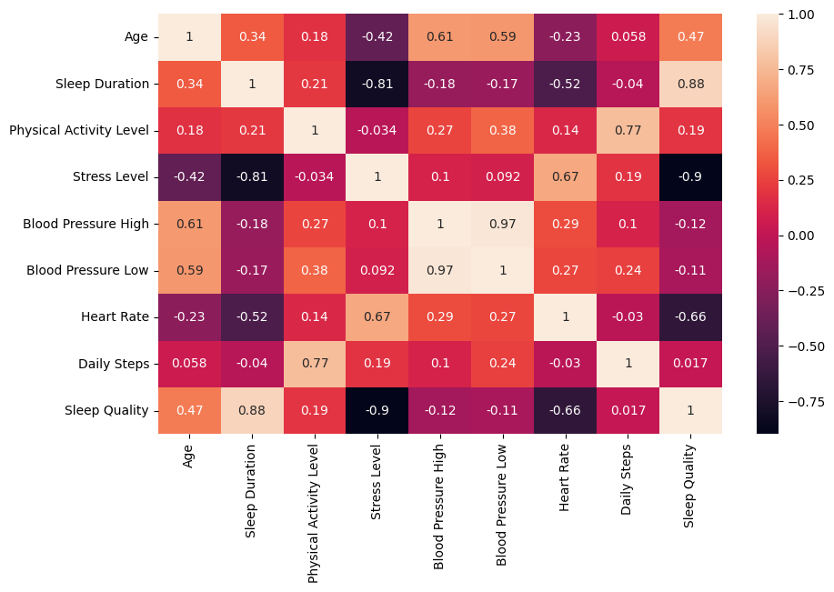
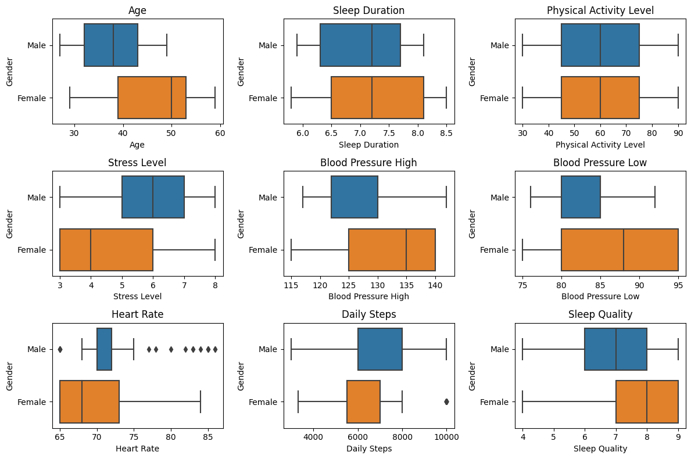
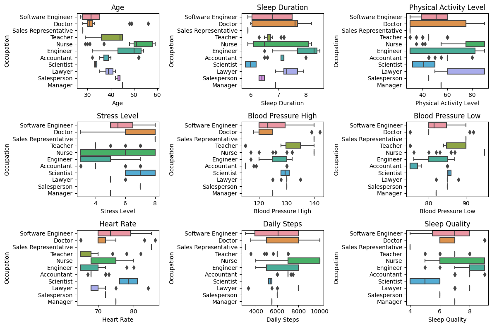
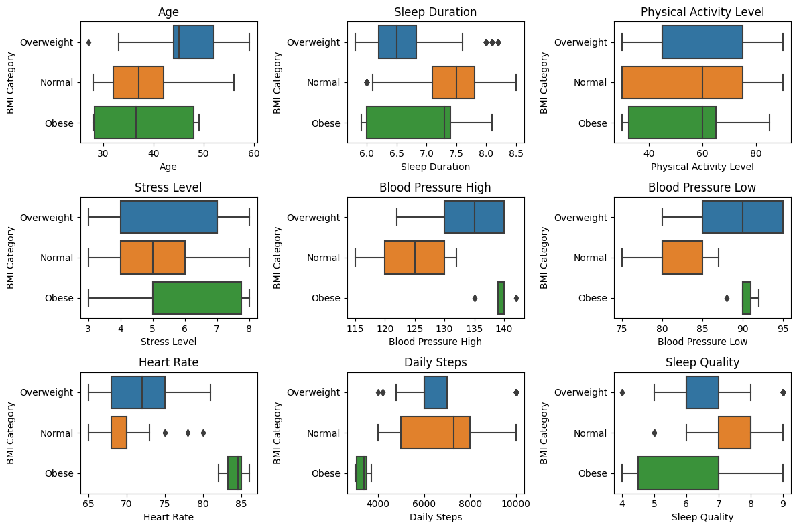

Sleep Health Analysis
1. Introduction
Dalam project ini kita akan menganalisa faktor-faktor yang dapat mempengaruhi kualitas tidur (sleep quality) seseorang. Informasi ini dapat digunakan untuk memberikan saran dan rekomendasi kepada individu atau kelompok untuk meningkatkan kebiasaan tidur mereka dan mencapai tidur yang lebih berkualitas.
1.1 Data sources
Dataset dalam project ini diambil dari Sleep Health and Lifestyle Dataset di kaggle. Dataset dapat dilihat pada link ini.
1.2 Define the problem
- Variabel manakah pada data yang mempunyai pengaruh terhadap
Sleep Quality? - Apakah variabel
Gendermempunyai hubungan yang kuat denganSleep Quality? - Apakah variabel
Agemempunyai hubungan yang kuat denganSleep Quality? - Apakah variabel
Occupationmempunyai hubungan yang kuat denganSleep Quality? - Apakah variabel
Sleep Durationmempunyai hubungan yang kuat denganSleep Quality? - Apakah variabel
Physical Activity Levelmempunyai hubungan yang kuat denganSleep Quality? - Apakah variabel
Stress Levelmempunyai hubungan yang kuat denganSleep Quality? - Apakah variabel
BMI Categorymempunyai hubungan yang kuat denganSleep Quality? - Apakah variabel
Blood Pressuremempunyai hubungan yang kuat denganSleep Quality? - Apakah variabel
Heart Ratemempunyai hubungan yang kuat denganSleep Quality? - Apakah variabel
Daily Stepmempunyai hubungan yang kuat denganSleep Quality? - Bagaimana kesimpulan akhirnya? dan rekomendasi apakah yang dapat dilakukan?
2. Exploratory data analysis
2.1. Numerical variable
Pertama, kita akan melihat distribusi dan hubungan dari masing-masing numerical variable

Kemudian, kita akan berapa nilai koefisien korelasi dari setiap numerical variable

Berdasarkan pairplot dan histmap di atas, maka dapat diambil kesimpulan sebagai berikut:
Sleep Qualitymempunyai korelasi yang kuat denganSleep DurationSleep Qualitymempunyai korelasi terbalik yang kuat denganStress LevelSleep Qualitymempunyai korelasi terbalik yang cukup kuat denganHearth Rate
2.2 Categorical variable
2.2.1 Distribusi by Gender

Berdasarkan boxplot Gender terhadap Sleep Quality, Female cenderung mempunyai Sleep Quality yang lebih baik dibandingkan dengan Male
2.2.2 Distribusi by Occupation

Berdasarkan boxplot Occupation terhadap Sleep Quality, maka:
Scienteistcenderung mempunyaiSleep Qualityyang rendahSoftware Engineercenderung mempunyaiSleep Qualityyang sedangNursecenderung mempunyaiSleep Qualitydari sedang hingga baikEngineercenderung mempunyaiSleep Qualityyang baik
2.2.3 Distribusi by BMI Category

Berdasarkan boxplot BMI Category terhadap Sleep Quality, semakin normal BMI Category seseorang, maka cenderung semakin baik Sleep Quality-nya (Normal > Overweight > Obese)
3. Statistical test
3.1 Statistical test Gender
Kita akan menguji apakah ada perbedaan signifikan antara jenis kelamin laki-laki dan perempuan pada variable Gender dalam menentukan Sleep Quality. Karena tedapat 2 kategori, kita akan melakukan uji t 2 sample independent. Dengan hasil sebagai berikut:
Banyak sampel untuk laki-laki = 189
Banyak sampel untuk perempuan = 185
==================================================
Hipotesis dan taraf signifikansi:
H0 : μ male - μ female <= 0
H1 : μ male - μ female > 0
alpha = 0.05
==================================================
Statistik hitung = -5.874547760454642
P value = 4.708223266344652e-09
Kesimpulan : Berdasarkan hasil uji statistik di atas, nilai p-value yang diperoleh < 0.05, sehingga diambil keputusan untuk menolak H0, yang artinya ada perbedaan signifikan Sleep Quality antara Laki-laki dan Perempuan
3.1 Statistical test Occupation
Kita akan menguji apakah ada perbedaan signifikan dari kategori di dalam variable Occupation dalam menentukan Sleep Quality. Karena terdapat lebih dari 2 kategori, kita akan melakukan uji ANOVA. Dengan hasil sebagai berikut:
Hipotesis dan taraf signifikansi:
H0 : μ software_engineer = μ doctor = μ sales_representative = μ teacher = μ nurse = μ engineer = μ accountant = μ scientiest = μ lawyer = μ salesperson = μ manager
H1 : Setidaknya terdapat satu yang berbeda
alpha = 0.05
==================================================
Hasil dari uji ANOVA:
df sum_sq mean_sq F PR(>F)
Occupation 10.0 241.907020 24.190702 30.022167 6.393557e-42
Residual 363.0 292.491376 0.805761 NaN NaN
Kesimpulan : Berdasarkan hasil uji statistik di atas, nilai p-value yang diperoleh < 0.05, sehingga diambil keputusan untuk menolak H0. yang artinya setidaknya ada perbedaan signifikan Sleep Quality pada salah satu bidang Occupation
3.1 Statistical test BMI Category
Kita akan menguji apakah ada perbedaan signifikan dari kategori di dalam variable BMI Category dalam menentukan Sleep Quality. Karena terdapat lebih dari 2 kategori, kita akan melakukan uji ANOVA. Dengan hasil sebagai berikut:
Hipotesis dan taraf signifikansi:
H0 : μ normal = μ overweight = μ obese
H1 : Setidaknya terdapat satu yang berbeda
alpha = 0.05
==================================================
Hasil dari uji ANOVA:
df sum_sq mean_sq F PR(>F)
Q('BMI Category') 2.0 56.685333 28.342666 22.011391 9.257969e-10
Residual 371.0 477.713063 1.287636 NaN NaN
Kesimpulan : Berdasarkan hasil uji statistik di atas, nilai p-value yang diperoleh < 0.05, sehingga diambil keputusan untuk menolak H0.
yang artinya setidaknya ada perbedaan signifikan Sleep Quality pada salah satu BMI Category
4. Regression model
Berdasarkan hasil EDA dan pengujian statistik sebelumnya, kita mengetahui bahwa terdapat beberapa variabel yang signifikan memengaruhi Sleep Quality.Variabel yang akan kita gunakan dalam model regresi yaitu:
Sleep DurationStress LevelHearth RateGenderOccupationBMI Category
OLS Regression Results
==============================================================================
Dep. Variable: Q('Sleep Quality') R-squared: 0.941
Model: OLS Adj. R-squared: 0.938
Method: Least Squares F-statistic: 354.4
Date: Sat, 08 Jul 2023 Prob (F-statistic): 6.91e-208
Time: 16:04:00 Log-Likelihood: -68.895
No. Observations: 374 AIC: 171.8
Df Residuals: 357 BIC: 238.5
Df Model: 16
Covariance Type: nonrobust
======================================================================================================
coef std err t P>|t| [0.025 0.975]
------------------------------------------------------------------------------------------------------
Intercept 10.1898 0.701 14.528 0.000 8.810 11.569
Gender[T.Male] 0.0417 0.064 0.647 0.518 -0.085 0.168
Occupation[T.Doctor] -0.3869 0.097 -4.009 0.000 -0.577 -0.197
Occupation[T.Engineer] -0.2165 0.078 -2.769 0.006 -0.370 -0.063
Occupation[T.Lawyer] 0.0126 0.093 0.136 0.892 -0.170 0.196
Occupation[T.Manager] -0.3716 0.312 -1.189 0.235 -0.986 0.243
Occupation[T.Nurse] -0.0718 0.080 -0.897 0.371 -0.229 0.086
Occupation[T.Sales Representative] -1.7958 0.258 -6.956 0.000 -2.303 -1.288
Occupation[T.Salesperson] -0.7231 0.107 -6.774 0.000 -0.933 -0.513
Occupation[T.Scientist] -1.1075 0.181 -6.135 0.000 -1.462 -0.752
Occupation[T.Software Engineer] -0.5492 0.170 -3.236 0.001 -0.883 -0.215
Occupation[T.Teacher] -0.9185 0.084 -10.909 0.000 -1.084 -0.753
Q('BMI Category')[T.Obese] 0.4917 0.198 2.488 0.013 0.103 0.880
Q('BMI Category')[T.Overweight] 0.0903 0.064 1.419 0.157 -0.035 0.215
Q('Sleep Duration') 0.4602 0.051 9.029 0.000 0.360 0.560
Q('Stress Level') -0.3204 0.031 -10.457 0.000 -0.381 -0.260
Q('Heart Rate') -0.0598 0.011 -5.671 0.000 -0.080 -0.039
==============================================================================
Omnibus: 49.293 Durbin-Watson: 1.407
Prob(Omnibus): 0.000 Jarque-Bera (JB): 275.426
Skew: -0.343 Prob(JB): 1.56e-60
Kurtosis: 7.148 Cond. No. 3.31e+03
==============================================================================
Notes:
[1] Standard Errors assume that the covariance matrix of the errors is correctly specified.
[2] The condition number is large, 3.31e+03. This might indicate that there are
strong multicollinearity or other numerical problems.
Dari hasil summary di atas, ada beberapa variable yang tidak signifikan:
Gendertidak signifikan -> keluarkan dari variableOcuupation(Lawyer,Manager, danNurse) tidak signifikan.Lawyer&Nurse-> tetap, karena jumlah datanya cukup banyak dan tidak ada kategori yang serupa untuk digabungManager-> hapus, karena jumlah datanya hanya 1
BMI Category(Overweight) tidak signifikan -> digabung dengan BMI Normal, sehingga kategori diBMI Categoryhanya tinggalNormaldanObese
OLS Regression Results
==============================================================================
Dep. Variable: Q('Sleep Quality') R-squared: 0.940
Model: OLS Adj. R-squared: 0.938
Method: Least Squares F-statistic: 435.4
Date: Sat, 08 Jul 2023 Prob (F-statistic): 1.13e-210
Time: 16:04:00 Log-Likelihood: -70.491
No. Observations: 373 AIC: 169.0
Df Residuals: 359 BIC: 223.9
Df Model: 13
Covariance Type: nonrobust
======================================================================================================
coef std err t P>|t| [0.025 0.975]
------------------------------------------------------------------------------------------------------
Intercept 10.1533 0.687 14.773 0.000 8.802 11.505
Occupation[T.Doctor] -0.3693 0.078 -4.734 0.000 -0.523 -0.216
Occupation[T.Engineer] -0.2021 0.070 -2.879 0.004 -0.340 -0.064
Occupation[T.Lawyer] 0.0404 0.071 0.567 0.571 -0.100 0.180
Occupation[T.Nurse] -0.0113 0.064 -0.175 0.861 -0.138 0.116
Occupation[T.Sales Representative] -1.7729 0.252 -7.024 0.000 -2.269 -1.277
Occupation[T.Salesperson] -0.6178 0.078 -7.917 0.000 -0.771 -0.464
Occupation[T.Scientist] -1.0501 0.172 -6.118 0.000 -1.388 -0.713
Occupation[T.Software Engineer] -0.5053 0.161 -3.146 0.002 -0.821 -0.189
Occupation[T.Teacher] -0.8535 0.073 -11.713 0.000 -0.997 -0.710
Q('BMI Category')[T.Obese] 0.4693 0.196 2.395 0.017 0.084 0.855
Q('Sleep Duration') 0.4578 0.051 8.980 0.000 0.358 0.558
Q('Stress Level') -0.3177 0.031 -10.379 0.000 -0.378 -0.257
Q('Heart Rate') -0.0589 0.010 -5.694 0.000 -0.079 -0.039
==============================================================================
Omnibus: 60.562 Durbin-Watson: 1.377
Prob(Omnibus): 0.000 Jarque-Bera (JB): 345.159
Skew: -0.506 Prob(JB): 1.12e-75
Kurtosis: 7.603 Cond. No. 3.22e+03
==============================================================================
Notes:
[1] Standard Errors assume that the covariance matrix of the errors is correctly specified.
[2] The condition number is large, 3.22e+03. This might indicate that there are
strong multicollinearity or other numerical problems.
5. Conclusion and recommendation
Setelah dilakukan analisis statistik, kita mendapatkan beberapa insight yang di mana dapat menjawab beberapa pertanyaan yang telah disebutkan sebelumnnya
-
Variabel manakah pada data yang mempunyai pengaruh terhadap
Sleep Quality?Berdasarkan hasil analisa di atas, terdapat 5 faktor yang dapat mempengaruhi
Sleep Qualityyaitu:Sleep Duration-> Semakin lama tidur, maka cenderung semaik baikSleep Quality-nyaStress Level-> Semakin tinggi stress level seseorang, maka akan semakin jelekSleep Quality-nyaHeart Rate-> Semakin tinggi heart rate seseorang, maka akan semakin jelek jugaSleep Quality-nyaOccupation-> Pekerjaan juga berpengaruh terhadap sleep quality, Engineer cenderung memilikiSleep Qualityyang baik, software engineer cenderung memeilikiSleep Qualityyang sedang, scientist cenderung memilikiSleep Qualityyang jelekBMI Category-> Seseorang dengan BMI normal cenderung memiliki sleep quality yang lebih baik dibandingkan dengan seseorang yang obesitas'
-
Apakah variabel
Gendermempunyai hubungan yang kuat denganSleep Quality?Dari hasil OLS,
Gendertidak mempunyai hubungan yang kuat denganSleep Quality, ditandai dengan nilai p-value sebesar 0.518 yang artinya perbedaanGenderbaikMalemaupunFemaletidak berpengaruh signifikan terhadapSleep Quality -
Apakah variabel
Agemempunyai hubungan yang kuat denganSleep Quality?Dari hasil EDA,
Agemempunyai hubungan yang kurang kuat denganSleep Quality, ditandai dengan nilai koefisien korelasi sebesar 0.47 -
Apakah variabel
Occupationmempunyai hubungan yang kuat denganSleep Quality?Dari tes ANOVA,
Occupationmempunyai hubungan yang kuat denganSleep Quality, ditandai dengan nilai p-value sebesar kurang dari 0.05 yang artinya setidaknya ada satu kategori yang berpengaruh signifikan -
Apakah variabel
Sleep Durationmempunyai hubungan yang kuat denganSleep Quality?Dari hasil EDA,
Sleep Durationmempunyai hubungan sangat kuat denganSleep Quality, ditandai dengan nilai koefisien korelasi sebesar 0.88 -
Apakah variabel
Physical Activity Levelmempunyai hubungan yang kuat denganSleep Quality?Dari hasil EDA,
Physical Activity Levelmempunyai hubungan yang tidak kuat denganSleep Quality, ditandai dengan nilai koefisien korelasi sebesar 0.19 -
Apakah variabel
Stress Levelmempunyai hubungan yang kuat denganSleep Quality?Dari hasil EDA,
Stress Levelmempunyai hubungan yang sangat kuat namun berkebalikan denganSleep Quality, ditandai dengan nilai koefisien korelasi sebesar -0.9 -
Apakah variabel
BMI Categorymempunyai hubungan yang kuat denganSleep Quality?Dari tes ANOVA,
BMI Categorymempunyai hubungan yang kuat denganSleep Quality, ditandai dengan nilai p-value sebesar kurang dari 0.05 yang artinya setidaknya ada satu kategori yang berpengaruh signifikan -
Apakah variabel
Blood Pressuremempunyai hubungan yang kuat denganSleep Quality?Dari hasil EDA,
Blood Pressurebaik high maupun low tidak mempunyai hubungan yang kuat denganSleep Quality, ditandai dengan nilai koefisien korelasi sebesar -0.12 dan -0.11 -
Apakah variabel
Heart Ratemempunyai hubungan yang kuat denganSleep Quality?Dari hasil EDA,
Heart Ratemempunyai hubungan yang kuat namun berkebalikan denganSleep Quality, ditandai dengan nilai koefisien korelasi sebesar -0.66 -
Apakah variabel
Daily Stepmempunyai hubungan yang kuat denganSleep Quality?Dari hasil EDA,
Daily Stepmempunyai hubungan yang tidak kuat denganSleep Quality, ditandai dengan nilai koefisien korelasi sebesar 0.017 -
Bagaimana kesimpulan akhirnya? dan rekomendasi apakah yang dapat dilakukan?
Ada 5 faktor yang mempengaruhi sleep quality sesorang, yaitu
Sleep Duration,Stress Level,Heart Rate,Occupation, danBMI Category. Hal-hal yang dapat dilakukan untuk meningkatkanSleep Qualityadalah:- Menambah jam tidur sesuai dengan standar jam tidur manusia sesuai usia
- Mengurangi tingkat strees (berhubungan juga dengan heart rate), baik itu dengan berlibur atau olah raga ringan setiap hari
- Mengurangi berat badan bagi yang obesitas, hal ini dapat dilakukan dengan menjaga pola hidup sehat
Reference
- Simulasi Final Project - Asistensi Kelas Statistics for Business Pacmann
- Relationship B/W 😴 and BMI depends on Age?